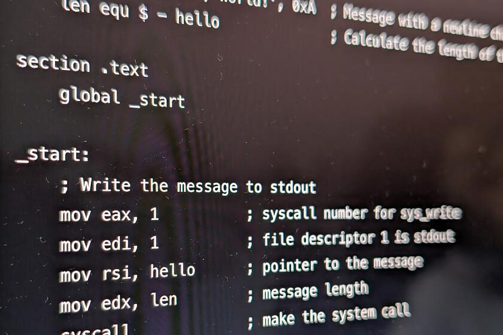

Il linguaggio Assembly dispone di numerose istruzioni che permettono di eseguire operazioni matematiche, logiche e di controllo.
Le istruzioni sono generalmente rappresentate attraverso parole abbreviate, chiamate mnemonici, che rendono il codice più comprensibile rispetto al linguaggio macchina.